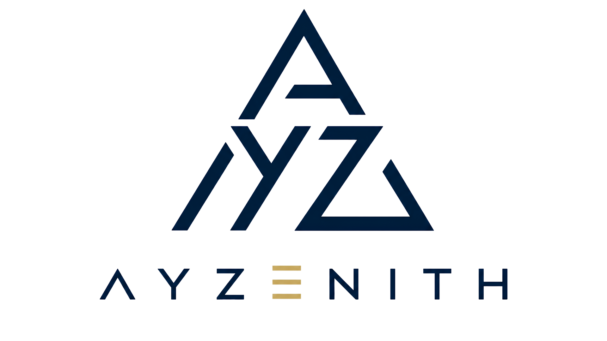

The complete visual and communication identity of AYZENITH — documented, refined and made repeatable, so the brand stays recognisable for years and across every surface.
This manual documents the existing AYZENITH identity — it does not redesign it. Where a refinement would raise professionalism while preserving recognition, it is offered as an optional recommendation, clearly marked.
What the brand stands for and how it should feel. The identity that follows is the visible expression of these ideas — and must always serve them.
AYZENITH is an independent, Türkiye-based global B2B commerce, sourcing and investment group — built to be trusted across sectors and across decades.
| Purpose | Global trade still runs on distance, opacity and risk. We exist to change the terms — giving ambitious businesses a single partner who can source, move and stand behind products anywhere. |
| Mission | To connect manufacturing, logistics and markets into one accountable partnership — so a business can access global supply without carrying global risk. |
| Vision | To build the infrastructure for a new generation of global commerce: beginning in trade and compounding into private label, new sectors and a holding built to last decades. |
| Brand Promise | Global Trade. Absolute Trust. One accountable partner for sourcing, quality, logistics and delivery. Our name is on the result. |
| Positioning | The institution, not the intermediary. In a category of anonymous middlemen, AYZENITH is the partner that consolidates, de-risks and remains. |
Every visual and verbal choice in this book exists to make one feeling credible: that AYZENITH can be trusted. The identity is restrained, precise and permanent because trust is the product.
If AYZENITH were a person, they would be the composed professional others rely on in difficult moments — never the loudest in the room, always the most dependable.
We think in decades and systems, not deals. The brand reads as considered, never impulsive.
Consistency is the personality. Everything is where it should be, done to the same standard, every time.
At home across borders. The brand holds one standard everywhere and speaks to the world, not one market.
Contemporary and precise, without chasing trends. Clean geometry, generous space, current craft.
Exact language, exact spacing, exact figures. Nothing approximate, nothing inflated.
Assured without volume. The brand states its position plainly and does not oversell.
Institutional in bearing. Every surface looks like the work of a serious organisation.
Composed under pressure. Weighted motion, quiet colour, unhurried tone — the feeling of control.
If a design or a sentence feels loud, rushed or boastful, it is off-brand — regardless of how impressive it seems. When in doubt, choose the calmer, more precise option.
The fixed system: the logo, type, colour and layout that make AYZENITH instantly recognisable. These are documented from the approved website and Enterprise Design Manual, and are not to be redesigned.
The AYZENITH logo is a triangular A·Y·Z monogram — a zenith, a peak — set above the AYZENITH wordmark. Its single signature detail is the gold three-bar "E": the one point of gold, the mark's "zenith".
| Primary logo | Full lockup — monogram above wordmark, navy artwork with the gold "E". Default for light surfaces, documents and print. |
| Secondary logo | Reversed monochrome for dark surfaces (off-white, not pure white). Used on the navy website, footer and dark applications. |
| Horizontal lockup | Recommended addition. Monogram left, wordmark right — for navbars, letterhead and wide, short spaces. |
| Vertical lockup | The primary stacked form (monogram over wordmark) — for covers, posters and square-ish spaces. |
| Monogram | The triangular A·Y·Z mark alone — for avatars, app icons and small or square placements where the wordmark would be illegible. |
Produce a dedicated reversed export that keeps the gold "E" (rather than rendering the whole mark one colour), and a standalone monogram file and horizontal lockup as vector (SVG). This preserves recognition at small sizes and on dark surfaces, and is a documentation improvement — not a redesign.
The logo is the most valuable asset in this book. These rules keep it legible, consistent and unmistakably AYZENITH wherever it appears.
Maintain clear space around the logo of at least the height of the monogram's base on every side. Keep other elements, text and edges outside this zone.
Never render the mark below 28 px (≈ 7 mm) in height — the legibility floor for the monogram. Below this, use the monogram alone.
Type carries most of the brand's voice. AYZENITH uses three families: Inter for interface and body, Newsreader for rare editorial emphasis, and IBM Plex Mono for labels and data.
The type scale follows a Major Third ratio (1.250), fluid at display sizes. Headlines use tight tracking (-0.02em) and generous line-height for calm authority; body copy holds a comfortable measure of ~65–75 characters. Numbers in data use tabular figures so columns align.
Where the brand fonts are unavailable (email, some documents), fall back to system sans-serif for Inter, Georgia for Newsreader, and a standard monospace for Plex Mono. The hierarchy matters more than the exact face.
The palette is built on two brand colours — Navy (depth and trust) and Gold (value, the zenith) — supported by a disciplined neutral range. The marketing surface is dark-first; navy is the brand's soul.
Gold is precious — used sparingly, it stays valuable. Reserve it for the primary call-to-action, the logo "E", small accents and rare display emphasis. Gold as body text or large fills fails contrast and cheapens the mark. One gold moment per view is usually enough.
On dark surfaces the accent is gold; on light surfaces the accent is navy (gold on light fails contrast), while the CTA stays gold everywhere. Backgrounds alternate navy and light in a calm rhythm. Elevation is navy-tinted, never pure black.
Layout is where the brand's calm and precision are felt. Generous space is not empty — it is the confidence to let each element stand alone.
| System | Standard |
|---|---|
| Spacing | An 8-point grid governs all spacing. Rhythm is geometric, not arbitrary; whitespace is used generously. |
| Grid | A 12-column responsive grid with consistent gutters. Content aligns to the grid; nothing floats without reason. |
| Containers | Site content max-width 1200px; wide/dashboard layouts 1440px. Body measure held to ~65–75 characters for readability. |
| Section rhythm | Major sections separated by large, fluid vertical space, alternating light and navy surfaces for cadence. |
Shadows are soft and navy-tinted, never pure black. A single faint gold hairline is the system's structural signature — used to separate, never to decorate. Consistent radius and spacing across every component are what make the whole system feel like one hand made it.
How the brand behaves beyond type and colour — the imagery, icons and motion that bring the identity to life without ever competing with the message.
Photography must feel true. AYZENITH shows real global commerce — not generic, smiling stock. The goal is credibility: the sense of a serious operation the viewer can trust.
Real business and trade: warehousing, manufacturing floors, logistics and freight, premium product photography, and genuine human interaction in professional settings.
Clichéd stock — handshake close-ups, glowing globes, arrows over skylines, staged "diverse team high-fiving". Anything that looks bought rather than lived.
| Lighting | Natural or considered directional light. Deep, controlled shadows over flat brightness — depth reads as substance. |
| Composition | Confident negative space, strong lines, precise framing. One clear subject; nothing cluttered. |
| Colour & grade | Cool, slightly desaturated with navy undertones; occasional warm gold highlight. Never oversaturated or heavily filtered. |
| Human interaction | Real people at real work — focused, professional, unposed. Dignity over enthusiasm. |
| Treatment | On dark layouts, a subtle navy scrim keeps overlaid type legible and unifies imagery to the palette. |
Until an owned photography library exists, the site uses on-brand navy placeholder surfaces rather than weak stock. A considered placeholder is preferable to a generic photograph. Replace placeholders only with imagery that meets this direction.
AYZENITH does not use playful or character illustration. Its "illustration" language is abstract and structural — the same geometry that builds the logo.
Icons are functional wayfinding, not decoration. AYZENITH uses a single, consistent line-icon set with an even stroke weight.
| Style | Outline (line) icons with a consistent ~1.5px stroke, rounded joins, minimal detail. |
| Colour | Inherit text colour — navy accent on light, gold on dark. Never multicolour. |
| Usage | To aid comprehension and navigation only. One icon per idea; never purely ornamental. |
| Consistency | Draw from one library (the site uses a single line set) so every icon feels part of the same family. |
Motion should feel like a bank vault door: substantial, smooth and deliberate — never bouncy, playful or fast for its own sake. Elegant, calm, purposeful, never distracting.
Weighted and controlled. Elements ease in and settle; nothing springs, overshoots or bounces. Motion reassures — it signals a system in command of itself.
Reveals content calmly on scroll, guides attention between states, and confirms actions. It always serves comprehension, never spectacle.
| Token | Value & use |
|---|---|
| Duration — fast | 200ms · small state changes, hovers. |
| Duration — base | 320ms · standard transitions and reveals. |
| Duration — slow | 480ms · larger, more deliberate movements. |
| Duration — slower | 640ms · rare, emphatic reveals. |
| Easing | Standard cubic-bezier(0.4, 0, 0.2, 1) and emphasis cubic-bezier(0.2, 0, 0, 1). No spring, no bounce. |
Motion always respects prefers-reduced-motion. For users who request reduced motion, animation is effectively removed. Focus states are never suppressed. Calm also means considerate.
How AYZENITH sounds. The voice is as much a part of the identity as the logo — confident, clear and restrained, the same in every language and on every channel.
We speak the way we want to be trusted: with confidence, clarity and restraint. We state our position plainly and let it stand — we do not sell it with volume.
On-brand: "We reply to qualified inquiries within two business days." · "We compete on reliability, not price." · "Every figure reflects how AYZENITH operates today — stated honestly, never inflated."
Off-brand: "We're the world's leading trade partner!" · "Unbeatable prices, act now!" · "A revolutionary, cutting-edge platform."
The voice is constant; the register adapts. Below is how the same confident, restrained tone is applied to each surface.
| Channel | How we write |
|---|---|
| Website | Editorial and precise. Short, declarative sentences; a clear eyebrow, a strong headline, one idea per section. Confidence through clarity, not adjectives. |
| Emails | Direct and respectful. Get to the point quickly, make one clear ask, close courteously. Never pushy, never padded. |
| Professional and useful. Share substance, not self-promotion; speak as a credible institution, not a salesperson. | |
| Sales documents | Structured and exact. State scope, standards, responsibilities and terms plainly. Promise only what operations can deliver. |
| Presentations | Minimal text, strong hierarchy, generous space. The slide supports the speaker; it is not a document to be read aloud. |
The identity in the world — from a business card to a trade-fair stand — and how it should evolve over the next decade while remaining unmistakably AYZENITH.
Corporate materials are often the first physical proof of the brand. They should feel like the website: precise, spacious and unmistakably AYZENITH.
| Business card | Navy or off-white, generous margins. Monogram or full mark, name and role in Inter, details in mono. Optional gold edge or a single gold hairline. Restraint over ornament. |
| Letterhead | Logo top-left with full clear space, a faint gold hairline under the header, mono contact strip in the footer. Wide margins; the page should breathe. |
| Email signature | Plain, single-column: name (Inter 600 navy), role and company, then contact details in a smaller neutral tone. Optional small logo. No banners, quotes or images that break in clients. |
| Presentation template | Navy and light master slides, large type, one idea per slide, gold used once per slide at most. Mono eyebrows label sections. |
| Proposal template | Mirrors this manual: cover, clear hierarchy, generous space, navy/gold system. Structured around scope, standards, responsibilities and terms. |
[Full Name]
Partnerships · AYZENITH
info@ayzenith.com · +90 541 437 19 07 · ayzenith.com · Istanbul, Türkiye
On social platforms AYZENITH appears as a credible institution, not a marketer. Profiles are consistent, restrained and unmistakably on-brand across every channel.
The primary channel. Monogram avatar on navy, a navy/grid banner with the tagline. Content is substance — capability, standards, considered perspective. Professional, never promotional.
A visual record of real operations, product and brand craft — held to the photography direction. Cohesive navy-and-gold grid; quality over frequency.
Considered, well-produced content: capability explainers, partner perspectives, behind-the-operation. Calm pacing and motion that matches the brand.
Every post is a brand impression that either builds or spends trust. If a post would not sit comfortably beside the website, it does not belong on an AYZENITH channel.
At international fairs — such as Hostech, IFA, Ambiente and comparable trade events — the stand is a three-dimensional expression of the brand. It should feel like walking into the website.
| Presence | Composed and confident, not loud. A calm navy space with precise lighting draws serious buyers more effectively than noise and colour. |
| Materials & colour | Deep navy surfaces, clean neutral structure, restrained gold accents. Quality materials and finish signal the institution the brand claims to be. |
| The mark | The monogram and wordmark, well-cleared and well-lit, as the anchor. Reversed (off-white) on navy walls. Never crowded with competing graphics. |
| Messaging | One clear line — the tagline or core promise — over dense copy. Capability shown through real product and considered visuals, not slogans. |
| Lighting & motion | Warm, directional light and any screen motion kept weighted and calm, matching the motion principles. Depth and focus over flash. |
| People | The team is part of the identity: professional, calm, genuinely helpful. The stand exists to begin conversations, not to broadcast. |
A visitor should be able to sense, before reading a word, that AYZENITH is precise, international and reliable. If the stand feels busy or generic, it is working against the brand.
A brand built for permanence should mature, not reinvent. Over the next decade AYZENITH will grow across categories and sectors — and must remain instantly recognisable throughout.
The vision compounds trade into private label, new sectors, proprietary brands and a lasting holding. As that happens, the identity should deepen rather than change. The following are the guard-rails for evolution.
The triangular A·Y·Z monogram, the navy-and-gold palette, the gold "E", the restrained and precise personality, and the promise — Global Trade. Absolute Trust. These are the anchors of recognition.
A refined vector logo system and sub-brand marks for new ventures; an owned photography library; an expanded, documented component and layout system; a maturing motion language — all within the existing identity.
| Near term | Vectorise the logo; produce the monogram, horizontal lockup and a reversed export that keeps the gold "E". Formalise this book as the single source of truth. |
| Mid term | Build an owned photography library to the photography direction. Extend the design system to new applications (proposals, decks, packaging) without altering the core. |
| Long term | Introduce a coherent sub-brand architecture for private label and new sectors — each clearly a member of the AYZENITH family, sharing the monogram logic, palette and voice. |
Every future change is tested against one question: does this deepen recognition and trust, or dilute it? We refine the identity; we do not restart it. Built for permanence applies to the brand itself.